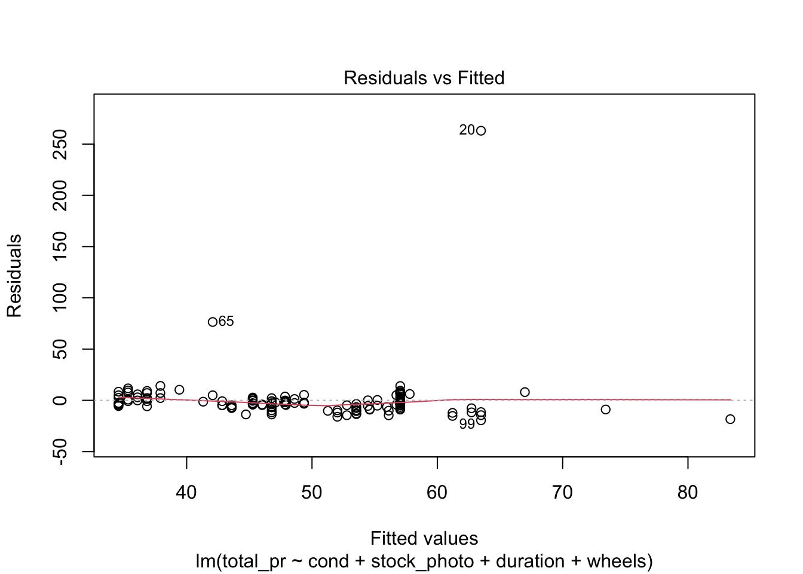
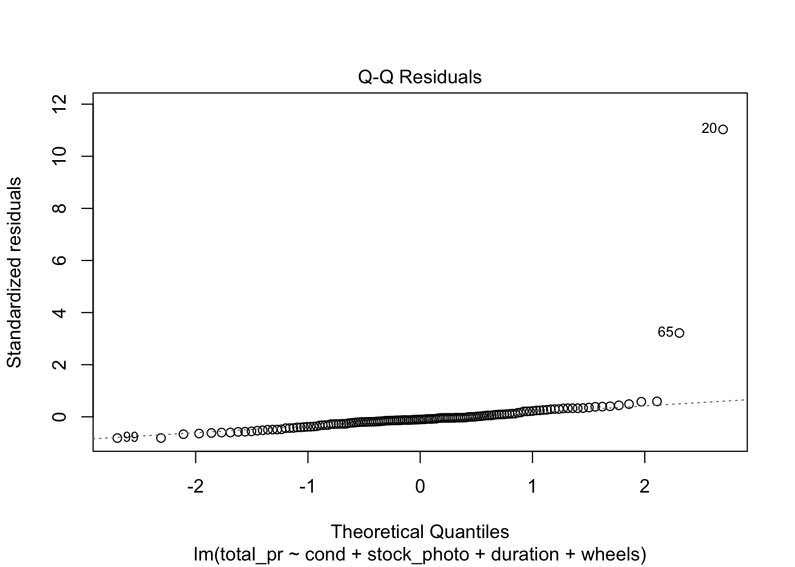
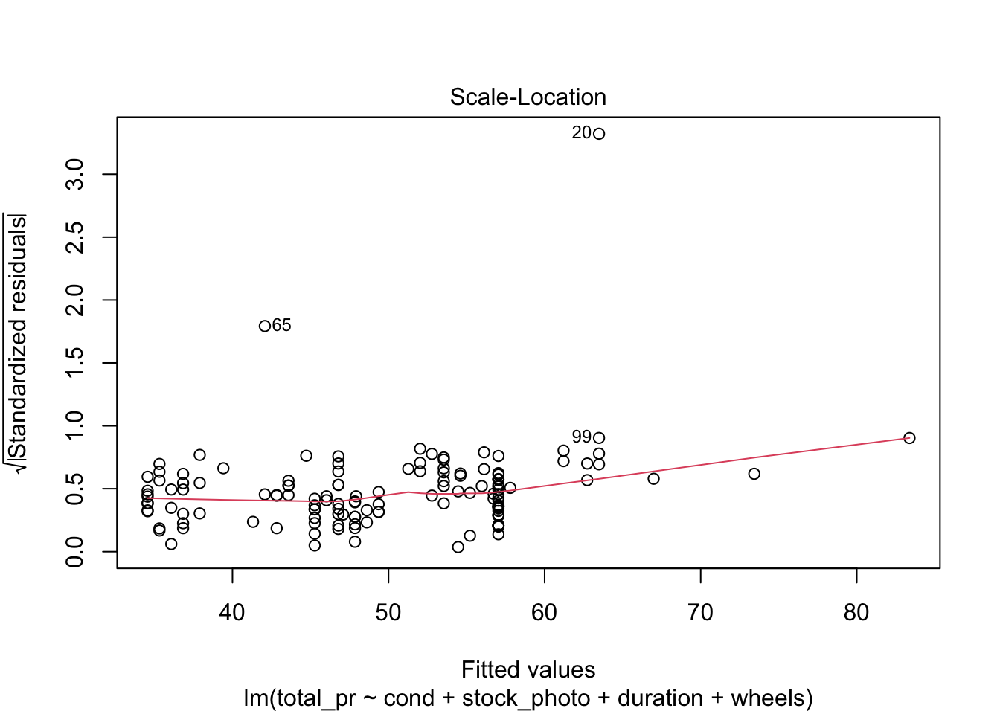
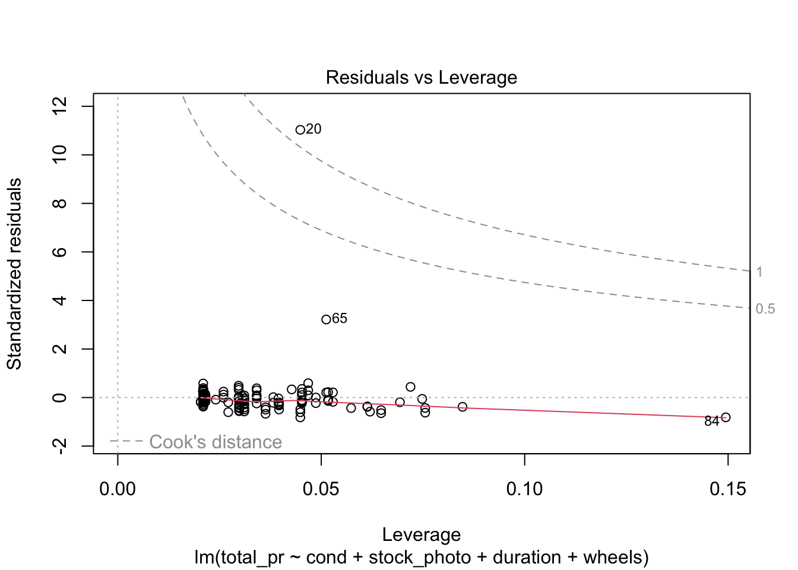
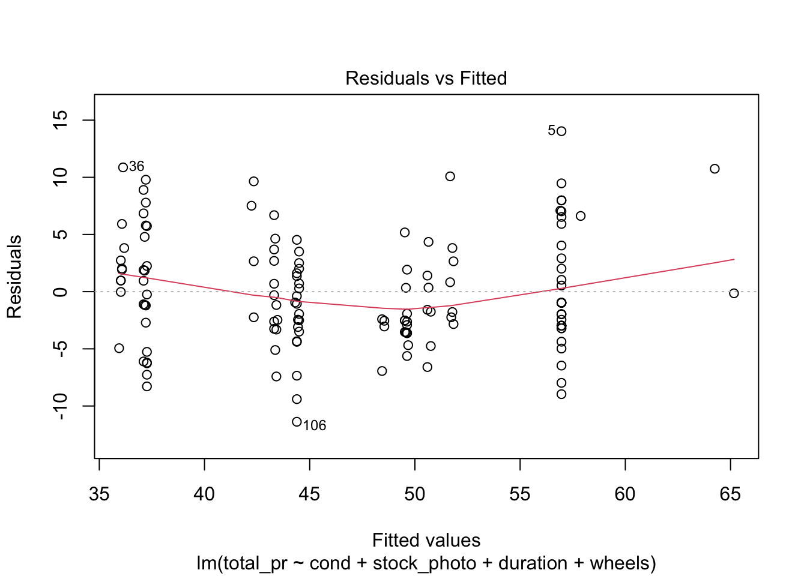
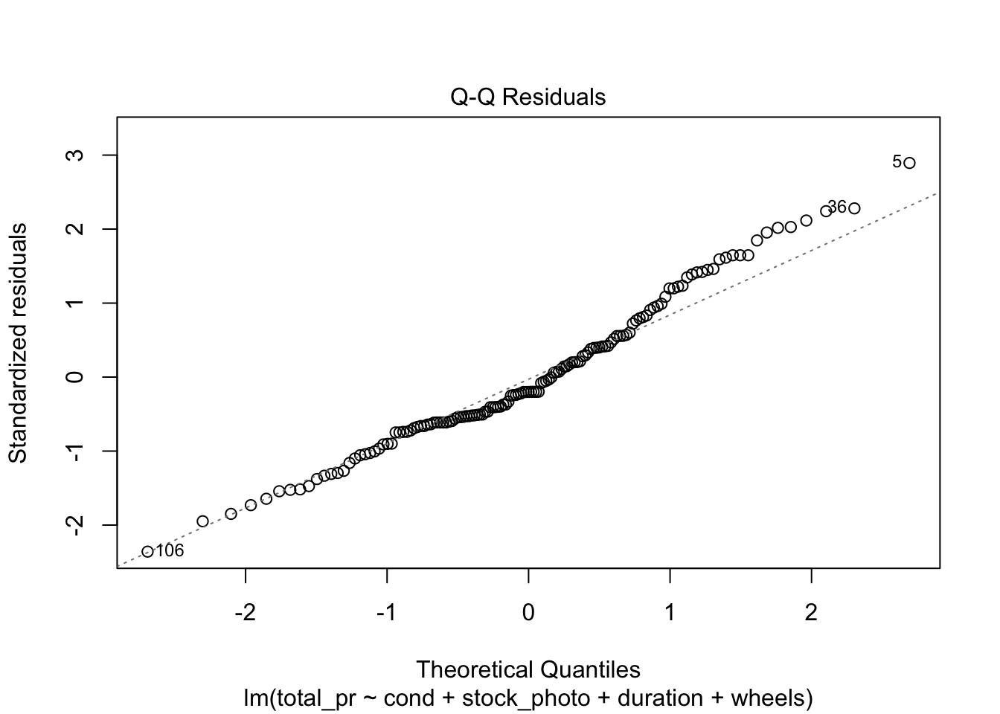
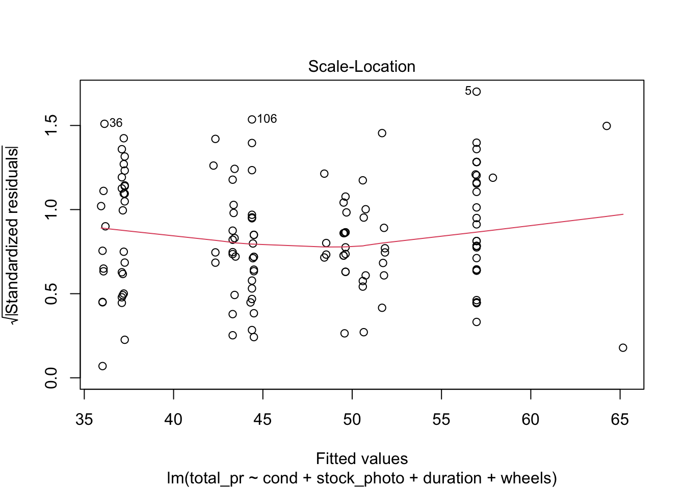
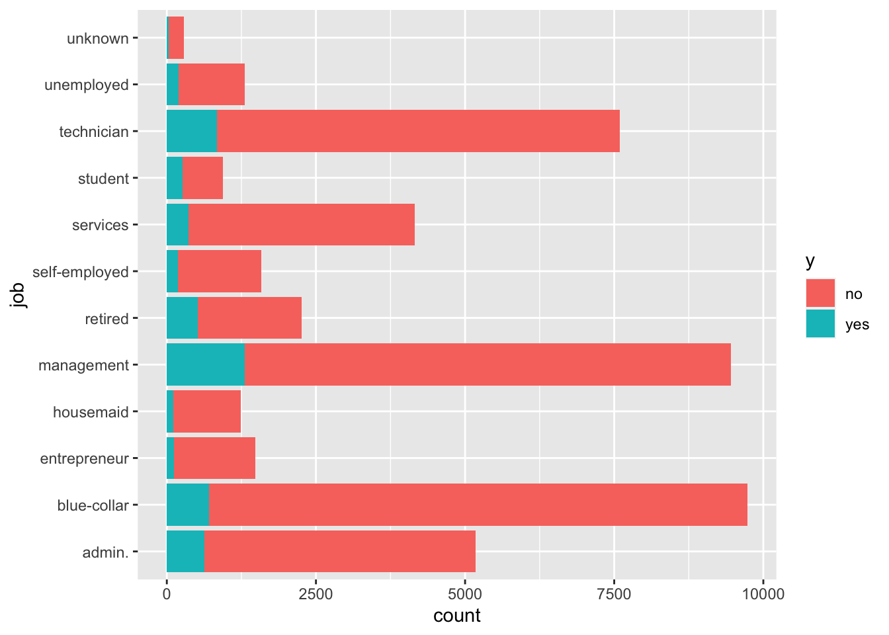

Textbook section 8.4 Inference for Linear Regression
Textbook section 9.1 Multiple Regression
10.2 More on Multiple regression
The OpenIntro Stats book gives an example of multiple regression with the mariokart data frame from their website. This involves the sale of 143 copies of the game Mario Kart for the Wii platform on eBay. They first predict the price based on most of the variables, like so.
Call:
lm(formula = total_pr ~ cond + stock_photo + duration + wheels,
data = mariokart)
Residuals:
Min 1Q Median 3Q Max
-19.485 -6.511 -2.530 1.836 263.025
Coefficients:
Estimate Std. Error t value Pr(>|t|)
(Intercept) 43.5201 8.3701 5.199 7.05e-07 ***
condused -2.5816 5.2272 -0.494 0.622183
stock_photoyes -6.7542 5.1729 -1.306 0.193836
duration 0.3788 0.9388 0.403 0.687206
wheels 9.9476 2.7184 3.659 0.000359 ***
---
Signif. codes: 0 '***' 0.001 '**' 0.01 '*' 0.05 '.' 0.1 ' ' 1
Residual standard error: 24.4 on 138 degrees of freedom
Multiple R-squared: 0.1235, Adjusted R-squared: 0.09808
F-statistic: 4.86 on 4 and 138 DF, p-value: 0.001069
plot(m)




There are four diagnostic plots in the above output. Each one gives us information about the quality of the model.
10.2.1 Residuals vs Fitted
This plot tells you the magnitude of the difference between the residuals and the fitted values. There are three things to watch for here. First, are there any drastic outliers? Yes, there are two, points 65 and 20. (Those are row numbers in the data frame.) You need to investigate those and decide whether to omit them from further analysis. Were they typos? Mismeasurements? Or is the process from which they derive intrinsically subject to occasional extreme variation. In the third case, you probably don’t want to omit them.
Second, is the solid red line near the dashed zero line? Yes it is, indicating that the residuals have a mean of approximately zero. (The red line shows the mean of the residuals in the immediate region of the \(x\)-values of the observed data.)
Third, is there a pattern to the residuals? No, there is not. The residuals appear to be of the same general magnitude at one end as the other. The things that would need action would be a curve or multiple curves, or a widening or narrowing shape, like the cross section of a horn.
10.2.2 Normal Q-Q
This is an important plot. I see many students erroneously claiming that residuals are normally distributed because they have a vague bell shape. That is not good enough to detect normality. The Q-Q plot is the standard way to detect normality. If the points lie along the dashed line, you can be reasonably safe in an assumption of normality. If they deviate from the dashed line, the residuals are probably not normally distributed.
10.2.3 Scale-Location
Look for two things here. First, the red line should be approximately horizontal, meaning that there is not much variability in the standardized residuals. Second, look at the spread of the points around the red line. If they don’t show a pattrn, this reinforces the assumption of homoscedasticity that we already found evidence for in the first plot.
10.2.4 Residuals vs Leverage
This shows you influential points that you may want to remove. Point 84 has high leverage (potential for influence) but is probably not actually very influential because it is so far from Cook’s Distance. Points 20 and 65 are outliers but only point 20 is more than Cook’s Distance away from the mean. In this case, you would likely remove point 20 from consideration unless there were a mitigating reason. For example, game collectors often pay extra for a game that has unusual attributes, such as shrink-wrapped original edition. As an example of a point you would definitely remove, draw a horizontal line from point 20 to a vertical line from point 84. Where they meet would be a high-leverage outlier that is unduly affecting the model no matter what it’s underlying cause. On the other hand, what if you have many such points? Unfortunately, that probably means the model isn’t very good.
10.2.5 Removing offending observations
Suppose we want to get rid of points 20 and 65 and rerun the regression. We could either do this using plain R or the tidyverse. I prefer the tidyverse method because of clarity of exposition.
Call:
lm(formula = total_pr ~ cond + stock_photo + duration + wheels,
data = df)
Residuals:
Min 1Q Median 3Q Max
-11.3788 -2.9854 -0.9654 2.6915 14.0346
Coefficients:
Estimate Std. Error t value Pr(>|t|)
(Intercept) 41.34153 1.71167 24.153 < 2e-16 ***
condused -5.13056 1.05112 -4.881 2.91e-06 ***
stock_photoyes 1.08031 1.05682 1.022 0.308
duration -0.02681 0.19041 -0.141 0.888
wheels 7.28518 0.55469 13.134 < 2e-16 ***
---
Signif. codes: 0 '***' 0.001 '**' 0.01 '*' 0.05 '.' 0.1 ' ' 1
Residual standard error: 4.901 on 136 degrees of freedom
Multiple R-squared: 0.719, Adjusted R-squared: 0.7108
F-statistic: 87.01 on 4 and 136 DF, p-value: < 2.2e-16
plot(m)



What a difference this makes in the output and the statistics and plots about the output! Keep in mind, though, that I just did this as an example. Points 20 and 65 may be totally legitimate in this case. Also, note that you could use plain R without the tidyverse to eliminate those rows by saying something like df <- mariokart[-c(20,65),]. The bracket notation assumes anything before the comma refers to a row and anything after a comma refers to a column. In this case, I didn’t say anything about the columns, so the square brackets just have a dangling comma in them. The important point is that one method or another may seem more natural to you. For most students, the tidyverse approach is probably more natural, so I highlight that.
10.3 Regression gone wrong
There is a dataframe in both the MASS and ISLR2 called Boston. It illustrates the problem of systemic racism and how that can affect statistical models such as we are generating in logistic regression. It is instructive to look at this dataframe rather than ignore it so we can learn how such things happen and, perhaps, how to guard against them.
The Boston dataframe is popular in textbooks and statistics classes. I’ve used it myself without thinking too much about it. It has a column called black which I naively assumed could be used to illustrate racism in Boston, a city notorious for segregation of the black population into a ghetto.
I was about to use it in this class when a student asked if the black column was removed in the ISLR2 package because of racism. I didn’t know. I looked at both copies, the one in MASS and the one in ISLR2 (a more recent package) and discovered that, indeed, the black column had been removed in the more recent package. Why? I searched for articles about the Boston dataframe and found two alarming articles analyzing it, one of which pointed out that some prominent statisticians had deleted it from their Python package after learning of the problem.
Far from being used to illustrate racism, this dataframe may have actually been perpetuating racist activity. The original purpose of the dataframe is innocuous. It is meant to illustrate the relationship of air pollution to housing prices, which seems like a laudable goal. There is evidence, though, that in assembling the dataframe, the creators made some racist assumptions that have had a lasting negative effect. What we know about assembling the dataframe is incomplete, based on incomplete documentation and attempted reconstruction by M. Carlisle, a self-described Mathematics PhD posting on Medium. The following information comes from Carlisle’s post, although I am responsible for any errors of interpretation.
It appears that the creators of the dataframe committed an error you can easily avoid, thanks in part to contemporary tools that were not available in 1975. They took some data from the US Census, but did not record it directly. Instead, they subjected it to a non-invertible transformation and recorded the result. That means that we can’t be sure of the original data and we are stuck, in a sense, with their interpretation of that data. Critically, that interpretation encoded two racist assumptions that should have been testable to root out racism rather than encoded to perpetuate it. The transformation is \(v=1000(B-0.63)^2\), where \(B\) is the proportion of the Black population by town. By non-invertible it is meant that \(B\) can’t be derived from \(v\) except in some cases because squaring makes the number positive regardless of whether \(B-0.63\) is positive or negative. This is a very basic error you should not emulate. Luckily, tools like Quarto make it possible to document all your transformations so you can use the raw data and someone else can substitute a different transformation. This is a key point to remember.
What about the equation itself? What social value is it encoding? Keep in mind that \(v\) is the contribution of “Blackness” to the median value of homes in a town. The shape of the function is a parabola as follows.
It appears that the value is in squared thousands of dollars, meaning that the median value of a totally segregated white neighborhood is about 19.9223493K USD higher than that of a neighborhood with 63 percent black population (where the parabola bottoms out). In a completely black neighborhood, the median value of a home is about 11.7004273K USD more than in the neighborhood with 63 percent black population. In other words, the equation is telling current homeowners that the value of their home will be decreased by integration and that they are financially better off under segregation.
What if this dataframe is used for inferring the appropriate sale price of new homes? This is really pernicious. It helps to perpetuate segregation by reinforcing the parabola. The fact that that this has become a textbook dataframe practically ensures that someone will use it to set prices or to make offers.
When M. Carlisle set out to find out the original Census numbers used, it turned out to be impossible, presumably because of sloppiness in the original data collection. As you may guess, there are only two possibilities for \(v\) for every instance of \(B\), so some matching should be possible. But it wasn’t possible for every town! The numbers from the analysis didn’t match any numbers from the 1970 census in several cases.
There is another glaring problem with this dataframe, mentioned in the other article I found, at FairLearn. That article includes the following paragraph:
The definition of the LSTAT variable is also suspect. Harrison and Rubenfield define lower status as a function of the proportion of adults without some high school education and the proportion of male workers classified as laborers. They apply a logarithmic transformation to the variable with the assumption that resulting variable distribution reflects their understanding of socioeconomic distinctions. However, the categorization of a certain level of education and job category as indicative of “lower status” is reflective of social constructs of class and not objective fact. Again, the authors provide no evidence of a proposed relationship between LSTAT and MEDV and do not sufficiently justify its inclusion in the hedonic pricing model.
The lstat column is problematic for at least three reasons: (1) it represents a hypothesis with no empirical support, (2) it exhibits intersectionality with the black column because of the prevalance of black males in both categories, and (3) it is a jumble of three things (education, job classification, and logarithmic transformation) meant to reinforce a social conception of “class”. Contemporary toolkits like Quarto can partially ameliorate problems like (3) by keeping an audit trail from raw data through model building. But (1) requires you to drop stereotypes rather than turn them into unsupported hypotheses and (2) challenges you to more deeply understand data to spot potential for malfeasance.
What about other ethical problems with this dataframe? The FairLearn article goes into more depth than I have here and unpacks the problems into different named constructs with precise definitions. It is well worth reading. It also references the discussion over what to do with this dataframe on GitHub. You can see evidence of what some people chose to do by comparing the MASS and ISLR2 versions, both of which are mistaken in their disposition in my opinion. Ultimately, the FairLearn article recommends abandoning this dataframe for predictive analysis exercises, so I have done that in our weekly exercises. Special thanks are owed to the student who got me searching for the above information!
10.4 Logistic Regression
Logistic regression is a kind of classification rather than regression. The book doesn’t make this point, but most textbooks do. You can divide machine learning problems into problems of regression and problems of classification. In regression, the \(y\) variable is more or less continuous, whereas in the classification problem, \(y\) is a set of categories, ordered or not. The word logistic comes from the logistic function, which is illustrated below. This interesting function takes an input from \(-\infty\) to \(+\infty\) and gives an output between zero and one. It can be used to reduce wildly varying inputs into a yes / no decision. It is also known as the sigmoid function.
Note that zero and one happen to be the boundaries of a probability measure. Hence, you can use the logistic function to reduce arbitrary numbers to a probability.
Call:
glm(formula = received_callback ~ gender, family = "binomial",
data = resume)
Coefficients:
Estimate Std. Error z value Pr(>|z|)
(Intercept) -2.40901 0.05939 -40.562 <2e-16 ***
genderm -0.12008 0.12859 -0.934 0.35
---
Signif. codes: 0 '***' 0.001 '**' 0.01 '*' 0.05 '.' 0.1 ' ' 1
(Dispersion parameter for binomial family taken to be 1)
Null deviance: 2726.9 on 4869 degrees of freedom
Residual deviance: 2726.0 on 4868 degrees of freedom
AIC: 2730
Number of Fisher Scoring iterations: 5
One easy way to compare these models is by comparing the values of AIC, the Akaike Information Criterion. This measures the loss of information in each model and the model with the lowest value of AIC has lost the least. In comparing the AIC values, it is typical to calculate \(\exp((\text{AIC}_{\text{min}}-\text{AIC}_{\text{alternative}})/2)\). This value, the relative likelihood, is the likelihood that the alternative model minimizes the information loss. Keep in mind that the AIC is only a tool to compare models, not an absolute measure. There is no such thing as an absolutely good AIC value. In the above cases, the relative likelihood for the two models with higher AIC values is vanishingly small. The model using honors loses far less information than do the other two.
Another approach is to calculate AICc, Delta_AICc, and AICcWt using R.
Model selection based on AICc:
K AICc Delta_AICc AICcWt Cum.Wt LL
honors 2 2710.73 0.00 0.83 0.83 -1353.36
race 2 2713.94 3.21 0.17 1.00 -1354.97
gender 2 2730.03 19.31 0.00 1.00 -1363.02
A common rule, discredited by Anderson (2008) is that, if Delta_AICc is greater than 2, the model should be discarded. But it is not the case that any model can be judged as good or bad based on AIC. Instead, the AIC tells us only relative information about the models: which is better from an information loss standpoint. The AICcWt or Akaike weight, is the probability that the given model is the best of the models in the table from an information loss standpoint. Here there is a clear winner. The difference between 83 percent and seventeen percent is striking.
10.4.1tidymodels approach
Datacamp shows a different way, using tidymodels in one of their tutorials. In this example, the bank wants to divide customers into those likely to buy and those unlikely to buy some banking product. They would like to divide the customers into these two groups using logistic regression, with a cutoff point of fifty-fifty. If there’s better than a fifty-fifty chance, they will send a salesperson but if there’s less than a fifty-fifty chance, they won’t send a salesperson.
pacman::p_load(tidymodels)#. Read the dataset and convert the target variable to a factorbank_df <-read_csv2(paste0(Sys.getenv("STATS_DATA_DIR"),"/bank-full.csv"))bank_df$y =as.factor(bank_df$y)#. Plot job occupation against the target variableggplot(bank_df, aes(job, fill = y)) +geom_bar() +coord_flip()

A crucial concept you’ll learn if you take a more advanced class, say 310D, is the notion of dividing data into two data frames, a training frame and a test frame. This is the conventional way to test machine learning models, of which logistic regression is one. You train the model on one set of data, then test it on another, previously unseen set. That’s the next thing done in this example.
#. Split data into train and testset.seed(421)split <-initial_split(bank_df, prop =0.8, strata = y)train <- split |>training()test <- split |>testing()#. Train a logistic regression modelm <-logistic_reg(mixture =double(1), penalty =double(1)) |>set_engine("glmnet") |>set_mode("classification") |>fit(y ~ ., data = train)#. Model summarytidy(m)
#. Class Predictionspred_class <-predict(m,new_data = test,type ="class")#. Class Probabilitiespred_proba <-predict(m,new_data = test,type ="prob")results <- test |>select(y) |>bind_cols(pred_class, pred_proba)accuracy(results, truth = y, estimate = .pred_class)
There are aspects of this approach, called hyperparameters, that influence the quality of the model. It can be tedious to adjust these aspects, called penalty and mixture, so here’s a technique for doing it automatically. You’ll learn about this and similar techniques if you take a more advanced course like 310D, Intro to Data Science.
#. Define the logistic regression model with penalty and mixture hyperparameterslog_reg <-logistic_reg(mixture =tune(), penalty =tune(), engine ="glmnet")#. Define the grid search for the hyperparametersgrid <-grid_regular(mixture(), penalty(), levels =c(mixture =4, penalty =3))#. Define the workflow for the modellog_reg_wf <-workflow() |>add_model(log_reg) |>add_formula(y ~ .)#. Define the resampling method for the grid searchfolds <-vfold_cv(train, v =5)#. Tune the hyperparameters using the grid searchlog_reg_tuned <-tune_grid( log_reg_wf,resamples = folds,grid = grid,control =control_grid(save_pred =TRUE))select_best(log_reg_tuned, metric ="roc_auc")
#. Fit the model using the optimal hyperparameterslog_reg_final <-logistic_reg(penalty =0.0000000001, mixture =0) |>set_engine("glmnet") |>set_mode("classification") |>fit(y~., data = train)#. Evaluate the model performance on the testing setpred_class <-predict(log_reg_final,new_data = test,type ="class")results <- test |>select(y) |>bind_cols(pred_class, pred_proba)#. Create confusion matrixconf_mat(results, truth = y,estimate = .pred_class)
Truth
Prediction no yes
no 7838 738
yes 147 320
precision(results, truth = y,estimate = .pred_class)